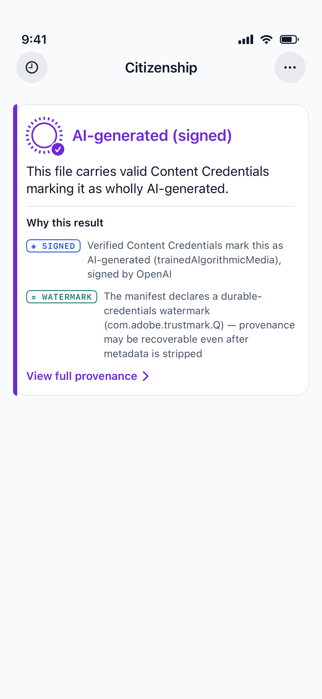
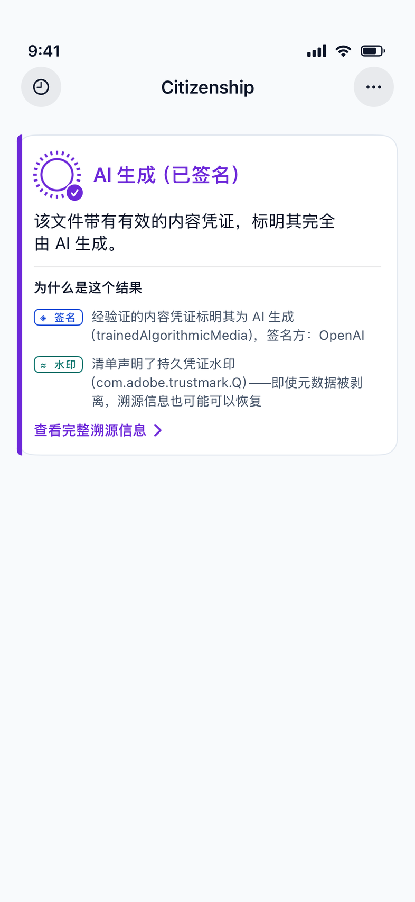
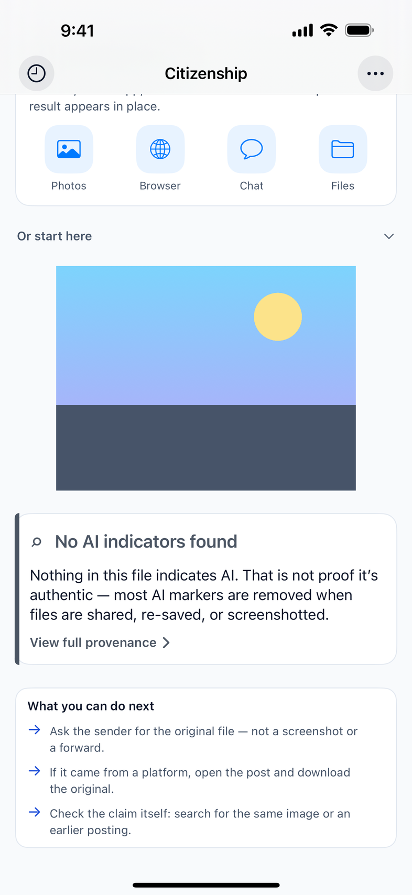
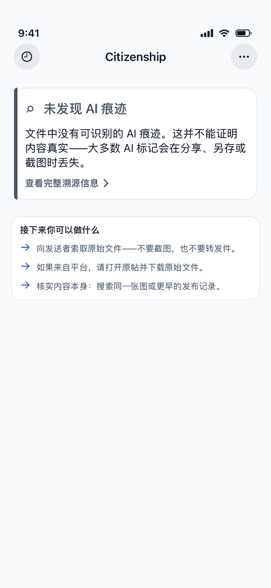
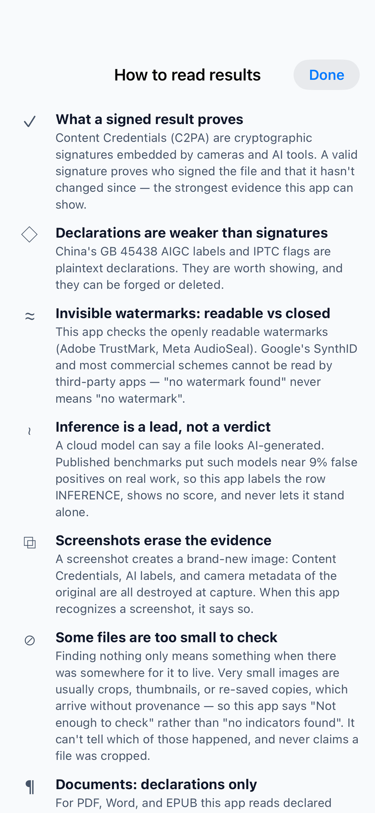
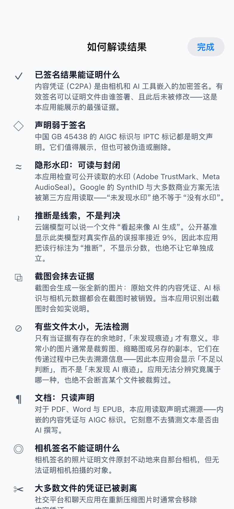

Check a file from wherever you found it — the share sheet in Photos, Safari, a chat app, or Files. The result appears in place.
在你发现文件的任何地方检测它——「照片」、Safari、聊天应用或「文件」中的分享面板。 结果就地显示。






Every finding belongs to a layer, and the lower the layer, the less it can say. The app shows the layer on every line.
每条证据都属于某一层级，层级越低，能说明的问题越少。应用会在每一行标注层级。
Checking is entirely on-device. The file you check is never uploaded — there is no account and no server that holds your content. The app sends anonymous usage statistics (which screens are opened, what kind of result a check produced) and nothing else. See the privacy policy.
检测完全在设备本机完成。你检测的文件绝不会被上传 ——没有账号，也没有任何服务器保存你的内容。应用只发送匿名的使用统计 （打开了哪些界面、检测得到哪一类结论），除此之外没有别的。详见 隐私政策。